Moving and rotating cage elements
Moving cage elements is the principal method of shaping a subdivision model. As you move elements around the model, the body is redrawn with a new shape. You also can rotate cage elements.
Selecting cage elements to move or rotate
Most move and rotate operations are done using the steering wheel, which is displayed when you select an element on the body cage. In Subdivision Modeling especially, filters help you to quickly select only the desired elements of the cage when you click or when you click+drag a fence around the cage elements.
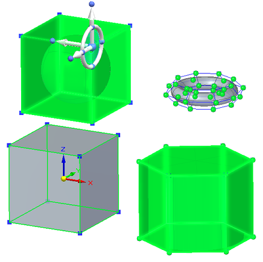
You set the selection filters using the standard Solid Edge selection techniques:
-
On the command ribbon, use the Select tool options to prioritize the selection of faces, edges, or vertices.
-
You also can use QuickPick to select individual planar faces, vertices, and edges.
-
Use Ctrl+Spacebar to cycle through the selection filters.
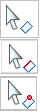
Move with the Tip option
The default mode—the Tip option—does not create new faces.
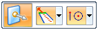
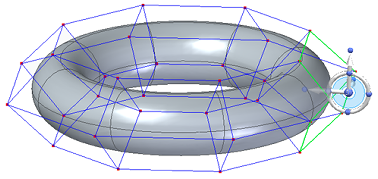
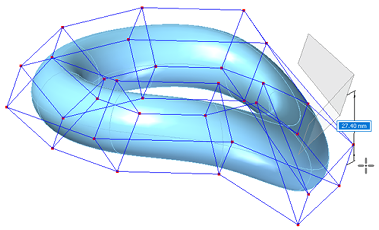
Original elements are moved, changing existing faces.
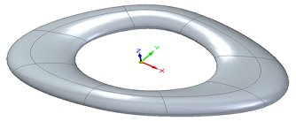
Move with the Lift option
The Lift option adds faces to the model, leaving existing faces in their current positions and orientations as you move the selected elements. In this case, the Segments box on the command bar defines how many faces (segments) to add.
You can use the Lift option only when the select set contains faces.
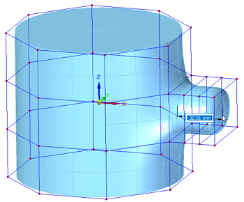
Move using Quick Move
The normal move command happens when you click one or more elements of the body cage. The steering wheel is displayed for you to move the selected elements.
Instead of starting a fence selection or selecting a cage element to move with the steering wheel, you can click+drag a vertex using Quick Move.
For more information, see Move using Quick Move.
Rotate a selected cage face or edge
Instead of moving a selected cage element, you can rotate it.
-
When you use the Select tool to select a cage face or edge, the Move option is displayed on the command bar as the default mode. Click the origin knob on the handle to display the 3D steering wheel.
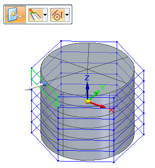
-
Click the torus on the 3D steering wheel to activate rotation mode.
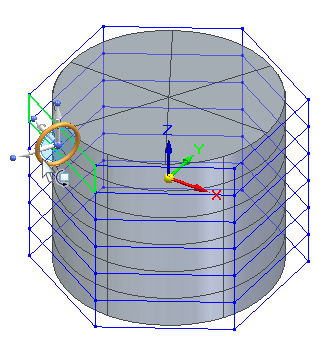
-
When the Rotate option is displayed on the command bar, select the Connected Faces option you want to use (Tip or Lift), and then drag the face in either direction to see how the cage faces respond.
-
As you rotate, the steering wheel snaps to 90-degree positions.
-
Press+hold the Shift key to rotate in 15-degree increments.
-
You also can type an explicit rotation angle in the edit box.
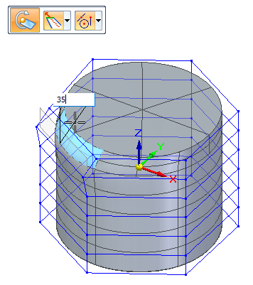
-
-
Right-click or press Enter to finish.
For more information about using the steering wheel, see the following topics:
Support for laminar edges with Move or Rotate and Lift
Subdivision Modeling supports the selection of faces that contain laminar (open) edges and the selection of laminar edges with the Move or Rotate command and the Lift option. This capability is useful when working with free-form surface shapes with open cages, that can later be converted to B-rep bodies.
-
When moving or rotating laminar faces using the Lift option, the laminar edges do not create new faces.
-
When moving or rotating selected laminar edges using the Lift option, the laminar edges create new faces.
When the RED FACES are lifted, no new faces are created where laminar edges exist.
When the RED LAMINAR EDGES are lifted, new faces are created.
-
Red=Laminar faces or edges selected
-
Yellow=New faces created
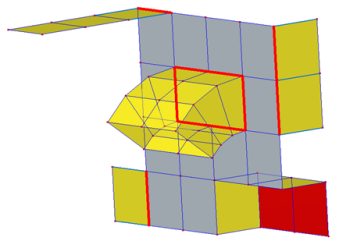
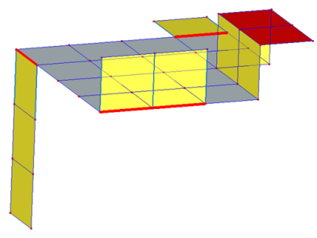
This example of the Move command with the Lift option shows laminar edges selected and new faces created.
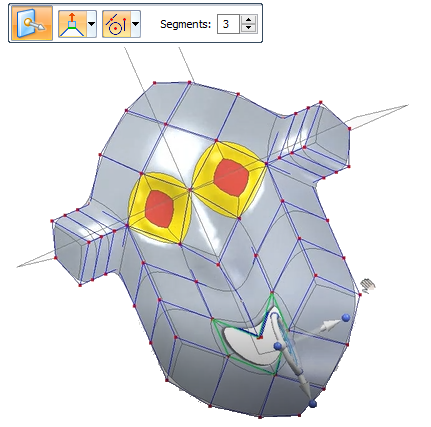
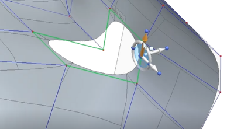
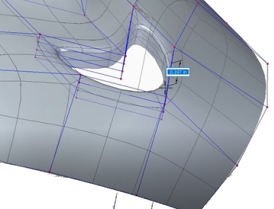
How do I
Subdivision Modeling workflowMove cage elements
Move using Quick Move
Use symmetric mode in Subdivision Modeling
Scale a subdivision model
Split subdivision model faces
Split faces with offset
Offset cage faces
Connect cage faces or edges with a bridge
Delete and fill cage faces
Align a shape to a curve
Learn more
Introduction to Subdivision ModelingUsing PathFinder with subdivision models
Working with cage elements
Creating subdivision features
Working with subdivision features
Look up more details
Subdivision Modeling commandBox command in Subdivision Modeling
Box command bar
Cylinder command in Subdivision Modeling
Cylinder command bar
Sphere command in Subdivision Modeling
Sphere command bar
Torus command
Torus command bar
Scale command in Subdivision Modeling
Blend command
Show Blend Values command
Split command
Split with Offset command
Bridge command
Align to Curve command
Cage Style command